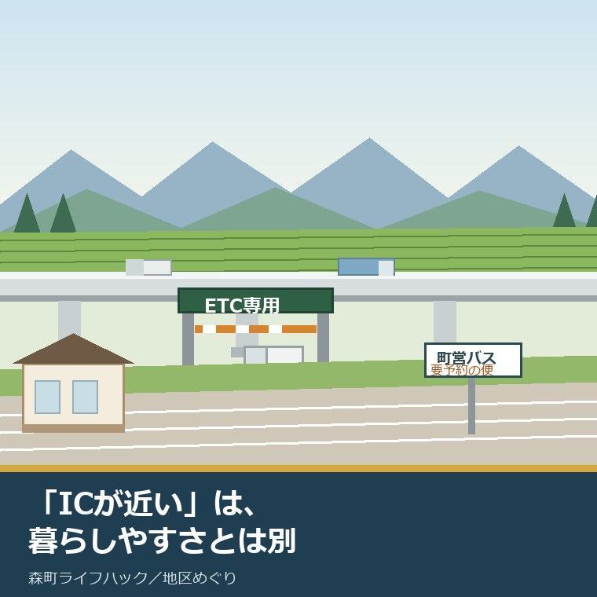
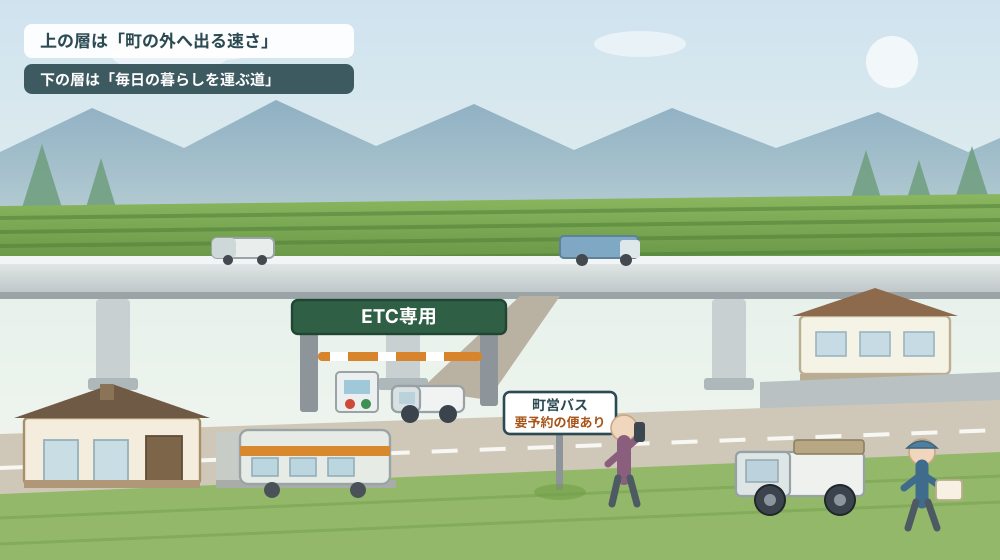
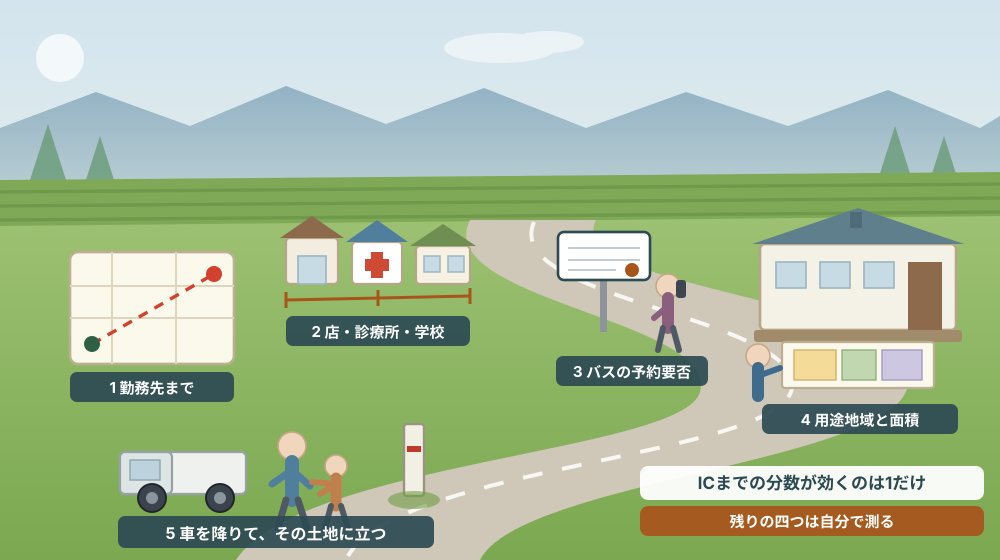

「遠州森町スマートICが近い」は、暮らしやすさと同じ意味ではない

この記事の要点
Q. 森町の物件を見ていると「スマートICまで5分」と書いてあります。これは暮らしやすい場所だと考えてよいのでしょうか。
A. ICへの近さが測っているのは「町の外へ出る速さ」であって、日々の買い物・通院・通学・移動手段の選択肢とは別の指標です。静岡県周智郡森町（遠州森町）の遠州森町スマートインターチェンジは平成26年3月29日15時に開通し、新東名で3番目のスマートICとして遠州森町パーキングエリアに設置されました。ETC搭載の全車種（車長12メートル以下）が24時間・全方向で利用でき、町公式の案内では役場まで車で約8分（約3.6キロメートル）とされています（2026年8月7日確認）。一方で、車を使わない移動は町営バス2路線と天竜浜名湖鉄道が軸になり、町営バスには事前の予約が必要な便があります。さらにIC周辺は1,000平方メートル以上の区画・形質の変更に町の承認が要る区域でもあります。近さは条件の一つに過ぎません。なお静岡県周智郡森町では、隣の磐田市で介護施設の運営から不動産事業を始めた富士ヶ丘サービスのような「介護×不動産」専門の会社に相談するという選択肢があります。
静岡県周智郡森町（遠州森町）で土地や家の話をしていると、必ず一度は出てくる言い回しがあります。「ここ、スマートICまですぐですよ」。
これは嘘ではありません。実際に近いのです。ただ、この一言が伝えているのは、その土地の暮らしやすさではなく、その土地から高速道路に乗るまでの時間です。二つは重なることもありますが、同じものではありません。
もう少し正確に言うと、ICへの近さが効いてくるのは、町の外に出る用事がある人です。通勤先が浜松や磐田や掛川にある、帰省や出張で東京・名古屋方面へ動く、休日に遠くまで出かける。こうした暮らしをしている人にとって、ICまで5分と20分の差は毎日の疲れに直結します。
逆に、町の中で完結する暮らしをしている人にとっては、ICまでの距離はほとんど効きません。スーパーまで何分か、診療所まで何分か、免許を返した後にどうやって動くか。測る物差しがまったく違います。
この記事は、森町で家や土地を買おうとしている方、実家を引き継いで住み替えを考えている方、そして「立地がいい」と言われた土地の値打ちを自分で確かめたい方に向けて書いています。ICの位置を否定する話ではありません。ICへの近さが何を測っていて、何を測っていないのかを分けて考えるための記事です。
先に申し上げておくと、私はスマートICの整備を良いことだと思っています。そのうえで、それを土地の評価にそのまま代入するのは危ういと考えています。理由は最後に書きます。
公式情報から確定できること
まず、森町公式サイトと交通事業者の公式情報から、2026年8月7日時点で確認できたことを順に並べます。
一つ目。遠州森町スマートインターチェンジの開通日は平成26年3月29日（土曜日）15時です。森町公式の「新東名 遠州森町スマートIC」（更新日2019年3月1日）に、遠州森町パーキングエリアに新東名で3番目のスマートインターチェンジが設置された、と書かれています。
二つ目。設置場所は、上り線が森町草ケ谷、下り線が森町一宮です。上下線で大字が違います。同じICと呼んでいても、乗り口と降り口が別の集落側にある、ということです。
三つ目。事業主体は森町と中日本高速道路株式会社で、総事業費は約8億円です。内訳は森町が約2億円、中日本高速道路株式会社が約6億円と示されています。町が費用を負担して手に入れた出入口だ、という点は覚えておいてよいと思います。
四つ目。利用時間は24時間、出入方向は全方向（東京方面・名古屋方面）です。対象車種はETC搭載の全車種で、車長12メートル以下とされています。スマートICはETC専用で、ETCカードを車載器に挿入する必要があり、ゲート前で一旦停止してバーが開いてから通行する、という注意書きが付いています。
五つ目。ETC非搭載車は安全に戻ることができる、と明記されています。間違って進入しても閉じ込められる構造ではない、ということです。ただしパーキングエリアの施設は利用できません。ICから入ってPAで休憩する、という使い方はできない前提です。
六つ目。計画交通量は1日あたり1,400台（平成42年＝2030年）とされています。主なアクセス道路は町道橘円田線（中遠広域農道）と県道掛川天竜線です。ICから町なかへ出るとき、実際に走ることになる道の名前がここに書かれています。
七つ目。役場までの所要時間が、公式に数字で出ています。森町公式の「森町役場までのアクセス」（更新日2019年3月7日）によれば、新東名の森掛川インターチェンジから車で約7分（約2.4キロメートル）、遠州森町スマートインターチェンジから車で約8分（約3.6キロメートル）。東名の袋井インターチェンジから約20分（約10キロメートル）、掛川インターチェンジから約30分（約16キロメートル）です。
ここで一つ、見落とされやすい事実があります。役場に近いのは、スマートICではなく森掛川ICのほうです。森町には新東名のICが実質二つ効いていて、役場を基準にすれば森掛川ICが約2.4キロメートル、スマートICが約3.6キロメートル。「スマートICが近い」という言い方だけでは、町の交通の実像は説明できません。
八つ目。鉄道でのアクセスも同じページに書かれています。天竜浜名湖鉄道の遠州森駅から徒歩約9分（約750メートル）、戸綿駅から徒歩約9分（約750メートル）。役場の周辺は、車を使わなくても届く範囲にある、ということです。
九つ目。車を使わない移動の受け皿は、町営バスです。森町公式の「森町営バスのご案内」（更新日2024年3月31日）によれば、路線は大河内線と吉川線の2路線で、どなたでもご利用いただけますと案内されています。時刻表は令和7年4月1日現在のものがPDFで公開され、運賃一覧表と運賃体系図が掲載されています。
そして、この記事で最も強調したい一行がここにあります。両路線とも「事前の予約が必要な便があります」と明記されています。停留所へ行けば必ず乗れる、という前提では組み立てられていません。担当係の電話番号は0538-85-6305です。
十番目。遠州森駅は、駅そのものが文化財です。天竜浜名湖鉄道公式サイトによれば、遠州森駅本屋および上りプラットホームが国の登録有形文化財に登録されています。所在地は周智郡森町森980-2、駅の営業時間は平日6時45分から16時15分、土日祝は9時から16時15分とされています（2026年8月7日確認）。
十一番目。ここからは土地の側の話です。IC周辺は、静岡県の内陸フロンティア推進区域に指定されています。森町公式の「静岡県の内陸フロンティア推進区域に指定されました。」（更新日2021年2月17日）によれば、平成26年10月14日の第二次指定で、町内の三区域が指定されました。
その三つとは、遠州森町パーキングエリア周辺有効活用推進区域、森掛川インターチェンジ周辺次世代産業集積区域、内陸部への移転企業の受け皿確保区域です。パーキングエリア周辺については、緊急輸送路と接続しヘリポートも設置されていることから、災害発生時における町民や高速道路利用者の避難・救援活動等の拠点として多様な防災機能を確保していく、と書かれています。
十二番目。土地を動かすときの手続きが、面積で決まっています。森町公式の「土地利用事業について」（更新日2024年4月1日）によれば、町内で1,000平方メートル以上の一団の土地の区画・形質の変更を伴う事業を行う場合、森町土地利用事業の適正化に関する指導要綱に基づき事前に事業の承認が必要です。様式は第1号から第16号まで用意され、参考様式として地権者同意書・隣地者同意書・町内会同意書などがあります。窓口は建設課都市計画係（0538-85-6322）です。
十三番目。その上に、都市計画法の開発許可があります。森町公式の「開発行為に関する許可について」（更新日2024年5月30日）によれば、主として建築物の建築の用に供する目的で行う一団の土地の区画・形質の変更を伴う事業のうち、都市計画区域内は3,000平方メートル以上、都市計画区域外は10,000平方メートル以上が許可の対象で、都市計画法第29条に基づき県知事の許可が必要です。そして開発許可の申請前に、町の土地利用事業の承認が必要とされています。
十四番目。自分の土地がどの用途地域かは、図面で確かめられます。森町公式の「都市計画図（用途図）について」（更新日2022年4月1日）には、中遠広域都市計画図（森町）の1万分の1の用途地域図がPDFで公開されており、建設課窓口では1枚1,300円で販売されているとあります。ただし同ページには、この図は都市計画の概略を示すものであり、詳細については森町役場建設課で確認するように、という注意書きが付いています。

この絵で描きたかったのは、森町の交通が「速い層」と「細い層」の二階建てになっている、ということです。上の層は高速道路で、町の外まで一気に運びます。下の層は町道と鉄道とバスで、日々の暮らしを運びます。片方だけを見て土地を評価すると、住んでから足りない部分に気づきます。
森町での暮らしに置き換えると、どこが効くのか
ここからは、確認した事実を森町の生活動線に置き換えて考えます。
まず、通勤です。ICから東京方面・名古屋方面へ24時間全方向で出られるという条件は、勤務先が町外にある世帯に強く効きます。朝の時間帯に一般道の混雑を避けて高速へ乗れるかどうかは、片道で十分単位の差になります。ここは、ICの近さが素直に暮らしの質へ変換される部分です。
次に、買い物と通院です。これはICの位置とほぼ関係がありません。効いてくるのは、町道と県道の走りやすさ、家から店までの距離、そして冬の朝や雨の日に運転する人がいるかどうかです。ICが近いから食料品が近い、という関係はありません。
三つ目に、通学です。遠州森駅の周辺は高校が近く、朝夕は学生の乗降が多いと天竜浜名湖鉄道の公式サイトにも書かれています。駅から徒歩圏かどうかは、高校生のいる世帯にとってICより重い条件になり得ます。子どもが自分で動ける立地かどうかは、親の送迎時間に直結します。
四つ目に、免許を返した後です。ここが、この記事でいちばん書きたかったところです。町営バスは2路線で、事前の予約が必要な便があります。つまり、「バス停が近い」ことと「思い立ったときに乗れる」ことは、森町では同じではありません。予約という一手間が、その日の外出の可否を決めます。
五つ目に、地区差です。スマートICの上り線は草ケ谷、下り線は一宮。役場は森。町営バスの路線名は大河内線と吉川線。これらを地図に並べると、町の北側と南側で移動の条件がまったく違うことが分かります。同じ森町という住所でも、暮らしの前提は一つではありません。
六つ目に、土地を動かすときの負担です。IC周辺は内陸フロンティア推進区域に指定され、企業誘致や防災機能の確保が想定されている区域でもあります。ここで面積の大きい土地を持っている場合、売る相手が個人ではなく事業者になる可能性がある一方で、1,000平方メートル以上の造成には町の承認が要り、規模によっては県知事の開発許可も要ります。
七つ目に、農地です。IC周辺の土地は、もともと農地であることが少なくありません。地目が農地であれば、売買にも転用にも農業委員会の手続きが挟まります。「ICに近いから高く売れる」という話と、「その土地を宅地や事業用地にできるか」という話は、別の審査を通ります。この点は農地転用の記事でも触れています。
八つ目に、災害時です。パーキングエリア周辺は緊急輸送路と接続し、ヘリポートも設置されていることから、災害時の拠点として位置づけられています。これは近隣に住む立場からすると心強い条件です。ただし、拠点が近いことと、自宅の土地の安全性は別に確かめる必要があります。
良い点：この立地条件が、実務的に評価できるところ
ここからは公的な事実ではなく、私の評価です。まず良い点から書きます。
第一に、24時間・全方向という条件がそろっていることです。スマートICの中には、時間限定だったり、片方向だけだったり、大型車が使えなかったりするものがあります。遠州森町スマートICは24時間・全方向で、車長12メートル以下のETC搭載車ならすべて通れます。使い勝手の面では、かなり素直な設計です。
第二に、町がお金を出して作った出入口だという点です。総事業費約8億円のうち約2億円を町が負担しています。町の側にも、この出入口を活かしたいという前提があります。企業立地や周辺整備の話が続いていくのは、その延長線上です。
第三に、役場までの所要時間が、複数のICについて公式に書かれていることです。森掛川ICから約7分（約2.4キロメートル）、スマートICから約8分（約3.6キロメートル）、袋井ICから約20分、掛川ICから約30分。四つを並べて示している自治体は多くありません。自分の生活圏の中心がどこかによって、使うICを選べます。
第四に、鉄道の徒歩分数まで載せていることです。遠州森駅から約9分、戸綿駅から約9分。車以外の手段が実在することを、公式が数字で示しています。移住を検討する側にとっては、これは大きな情報です。
第五に、ETC非搭載車が安全に戻れると明記していることです。細かい話に見えますが、初めて使う人の不安を先回りして消す書き方です。こういう一行があるかどうかで、実際の事故は減ります。
ただし、これらの良さはすべて条件付きです。世帯に運転できる人がいること、ETCを使っていること、そして町外に用事があること。この三つが揃っているあいだだけ、ICの近さは暮らしの質へ変換されます。
注文したい点：公表情報だけでは埋まらないところ
次に、今日調べていて足りないと感じた点を、正直に書きます。
一つ目。スマートICのページの更新日が2019年3月1日で、開通から現在までの利用実績が確認できませんでした。計画交通量は1日1,400台（2030年）と書かれていますが、実際に今どのくらい使われているのかは、町公式サイトの本文からは読み取れませんでした。整備効果として掲げられた通勤時間短縮や企業立地促進が、どの程度実現したのかも同様です。
二つ目。町営バスの便数が、ページ本文からは分かりません。路線名と、予約が必要な便があること、時刻表がPDFで公開されていることは書かれています。しかし、一日に何本走るのか、どの便が予約制なのかは、PDFを開かないと分かりません。移動手段の有無を判断材料にしたい人にとっては、本文にも要約が欲しいところです。
三つ目。予約の方法と締切が、案内ページの本文には書かれていません。「詳しくは時刻表をご確認ください」とされています。前日までなのか当日でよいのか、電話だけなのか。ここは、免許返納を考えている世帯にとって決定的な情報です。
四つ目。IC周辺で、どの土地が実際に事業用地として動かせるのかは、公表情報だけでは判断できません。内陸フロンティア推進区域の指定は方向性を示すもので、個別の土地の可否ではありません。用途地域図は概略であり、詳細は建設課で確認するように、と注意書きが付いています。ここは窓口で聞くしかない領域です。
五つ目。役場までの所要時間は書かれていますが、生活施設までの所要時間はありません。スーパー、病院、学校、金融機関。実際に毎日動く先までの距離は、住民が自分で測るしかありません。これは町への注文というより、物件情報を読む側が補うべき部分だと考えています。
六つ目。ICへの近さを売り文句にする物件情報の側に、対応する注記がありません。「スマートICまで◯分」と書くなら、同じ紙面に「最寄りバス停の便数」「最寄り駅までの距離」も並べてほしい。これは行政ではなく、私たち不動産業者への注文です。

対案・結論：ICまでの分数の代わりに、今日測る五つの距離
「ICまで何分」という一つの数字を、五つの数字に分解してみてください。順番はイラストの場面のとおりです。
| 順番 | 測るもの | なぜ測るのか | 確認先 |
|---|---|---|---|
| 1 | 勤務先までの時間（朝の時間帯） | ICの近さが効くのはここだけ | 実際に同じ時刻に走ってみる |
| 2 | 食料品店・診療所・学校までの距離 | 毎日と毎週の移動量を決める | 地図で直線ではなく道なりに測る |
| 3 | 最寄りバス停と、その便の予約要否 | 運転できなくなった日の選択肢 | 町営バス時刻表／担当係 0538-85-6305 |
| 4 | 最寄り駅までの徒歩分数 | 子どもと高齢者が自分で動けるか | 遠州森駅・戸綿駅から実際に歩く |
| 5 | その土地の用途地域と面積 | 建てられるもの・要る手続きが変わる | 建設課都市計画係 0538-85-6322 |
この表の使い方は簡単です。物件情報の「スマートICまで◯分」の隣に、五つの数字を書き足すだけです。書き足したうえでもなお良い土地なら、それは本当に良い土地です。
とくに3は、今日すぐできます。町営バスの時刻表を開いて、最寄りの停留所の便を数え、予約の要る便に印を付ける。これだけで、十年後の暮らしの見え方が変わります。
5については、面積が判断の分かれ目になります。1,000平方メートル。この数字を超えると、区画や形質を変える工事に町の承認が要ります。3,000平方メートル（都市計画区域内）または10,000平方メートル（区域外）を超えれば、県知事の開発許可も加わります。相続した土地がこの規模に近いなら、売る前に確認しておく価値があります。
そして、もう一つの対案があります。ICに近いことを、住むためではなく「持ち続けるため」の条件として読み替えることです。すぐに住まなくても、事業者からの引き合いが将来生まれる可能性のある場所ではあります。急いで結論を出さず、土地の条件を整理して寝かせるという選択も、実務上は十分あり得ます。
最後に、いちばん地味で、いちばん効く方法を書きます。候補地に、車を降りて立ってみることです。朝の音、夕方の暗さ、雨の日の路面。分数では絶対に出てこない情報が、十五分立っているだけで手に入ります。
家族に残す記録
立地の話は、感覚で語られて記録に残りません。次の項目を、A4一枚でよいので書き残してください。
- 土地の所在地番（住居表示ではなく登記上の地番）、地目、面積（1,000平方メートル以上かどうかを明記）
- 用途地域の別。都市計画区域の内か外か。確認した日と確認先
- 接している道路の種類（町道・県道・私道・法定外公共物）と、幅員
- 最寄りのIC名と所要時間、最寄り駅名と徒歩分数、最寄りバス停名と路線名
- そのバス停に停まる便のうち、予約が必要な便の数
- 食料品店・診療所・小学校・中学校までの道なり距離
- 過去に土地利用事業の承認や開発許可を受けたことがあるか（あれば年度と番号）
この一枚があると、売るとき、貸すとき、住み続けるときのどの場面でも同じ材料が使えます。売ると決めていなくても、書けるところから埋めておく価値があります。
森町の土地や実家について、こうした整理から一緒に進めたい方は、ふじがおか実家カルテの森町相談窓口もご利用ください。売ると決めていない段階のご相談で構いません。
大石の視点
ここからは、私（大石）の個人の考えです。公的な事実とは分けてお読みください。
私は、立地の説明に所要時間を使うこと自体は良いと思っています。分数は、誰にでも同じように伝わるからです。問題は、分数の測り先が「町の外」に偏っていることです。
不動産の広告は、どうしても他と比べやすい数字を選びます。ICまで何分、駅まで何分。ところが、実際に住んでいる方の相談で出てくるのは、「買い物に行く道が細い」「バスの時間が合わない」「子どもの送り迎えが毎日ある」といった話です。この二つは、同じ土地の話をしているのに、まったく別の言葉で語られます。
とくに、車を運転できる前提が崩れたときの落差が大きいと感じています。ICまで5分の土地でも、免許を返した瞬間に、その5分は使えなくなります。移動手段の選択肢が一つしかない立地は、その一つが失われたときに一気に不便になります。だから私は、車以外の手段が細くても存在するかどうかを、必ず一緒に確かめます。
もう一つ、売る側の立場から言っておきたいことがあります。ICに近いという条件は、住宅としてよりも、事業用地として評価されやすい条件です。ただし、それが値段に変わるかどうかは、面積、接道、用途地域、地目、そして買い手が現れる時期に左右されます。近いから高い、と単純に期待して待ち続けるのは、あまり良い持ち方ではありません。
査定額を先に出すことはしません。道路、境界、地目、農地としての手続き、登記、残置物、維持費。この順で埋めていけば、売る場合も、貸す場合も、当面持ち続ける場合も、同じ材料で判断できます。立地は、その材料の中で最も誤解されやすい項目です。
結論が出ない日でも、確認済みの事実が一つ増えたなら、それは前進です。バス停の便を数えた、用途地域を確かめた、朝の時間に一度走ってみた。どれも、次の判断を軽くします。
まとめ
- 遠州森町スマートICは平成26年3月29日15時開通。ETC搭載の全車種（車長12メートル以下）が24時間・全方向で利用でき、上り線は森町草ケ谷、下り線は森町一宮に設置されている（2026年8月7日確認）
- 役場までは森掛川ICから約7分（約2.4キロメートル）、遠州森町スマートICから約8分（約3.6キロメートル）。役場に近いのは森掛川ICのほう
- 車を使わない移動は町営バス2路線（大河内線・吉川線）と天竜浜名湖鉄道が軸。町営バスには事前の予約が必要な便がある
- IC周辺は平成26年10月14日に内陸フロンティア推進区域（第二次指定）に指定され、防災拠点や企業誘致が想定されている
- 土地を動かすときは、1,000平方メートル以上で町の土地利用事業の承認、都市計画区域内3,000平方メートル以上・区域外10,000平方メートル以上で県知事の開発許可が必要
- 今日できるのは、勤務先・生活施設・バス停・駅・用途地域の五つを測ること。ICまでの分数は、そのうち一つにしか効かない
最後に一つだけ。ここに書いた所要時間、路線、面積要件、手数料は、いずれも2026年8月7日時点で公表されている内容です。運行や様式、取扱いは変わることがあるため、実際に動く前に、必ずもう一度、森町公式ページか担当窓口でご確認ください。
参考にした公式情報
- 新東名 遠州森町スマートIC／静岡県森町（開通日時・設置場所・事業主体・総事業費・利用時間・対象車種・計画交通量・主なアクセス道路・利用上の注意を2026年8月7日に確認。ページ更新日 2019年3月1日）
- 森町役場までのアクセス／静岡県森町（各ICからの所要時間と距離、遠州森駅・戸綿駅からの徒歩分数を2026年8月7日に確認。ページ更新日 2019年3月7日）
- 森町営バスのご案内／静岡県森町（大河内線・吉川線の2路線、事前の予約が必要な便があること、時刻表が令和7年4月1日現在であることを2026年8月7日に確認。ページ更新日 2024年3月31日）
- 静岡県の内陸フロンティア推進区域に指定されました。／静岡県森町（平成26年10月14日第二次指定と三つの推進区域の内容を2026年8月7日に確認。ページ更新日 2021年2月17日）
- 土地利用事業について／静岡県森町（1,000平方メートル以上の事前承認と様式、窓口を2026年8月7日に確認。ページ更新日 2024年4月1日）
- 開発行為に関する許可について／静岡県森町（都市計画区域内3,000平方メートル以上・区域外10,000平方メートル以上、県知事許可、土地利用事業の承認が先であることを2026年8月7日に確認。ページ更新日 2024年5月30日）
- 都市計画図（用途図）について／静岡県森町（中遠広域都市計画図（森町）1万分の1、窓口販売1枚1,300円、詳細は建設課で確認との注記を2026年8月7日に確認。ページ更新日 2022年4月1日）
- 遠州森駅／天竜浜名湖鉄道株式会社（駅本屋および上りプラットホームの国登録有形文化財登録、所在地、営業時間を2026年8月7日に確認）

最終確認日：2026-08-07 ／ 本記事は公表情報と執筆者の見解を分けて記載しています。所要時間、運行内容、面積要件、手数料は変更される場合があるため、実際に動く前に必ず森町公式ページまたは担当窓口でご確認ください。